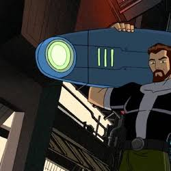

Ben și Gwen ajung în viitor, unde îl întâlnesc pe Ben adult. Acesta a devenit un erou experimentat și folosește Omnitrixul la adevăratul său potențial. Împreună trebuie să înfrunte o nouă amenințare, iar Ben descoperă cum ar putea arăta viitorul său.
▶ URMĂREȘTE EPISODUL